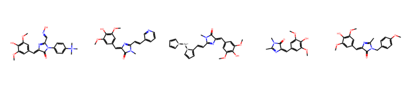
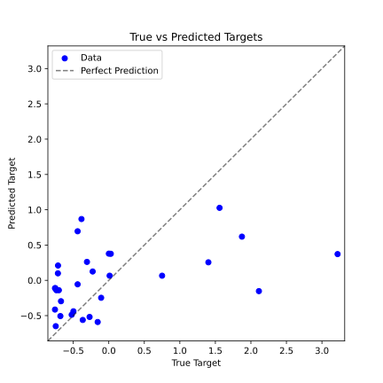
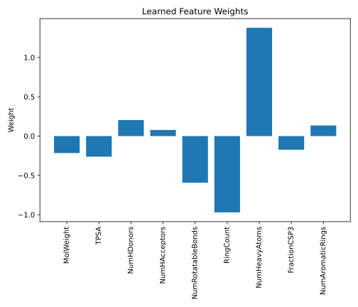

Regression
You might be wondering why we are revisiting regression. The reason is that linear regression is a fundamental supervised machine learning algorithm used to model the relationship between a set of input features and a continuous output. This section will build upon what you’ve learned, so don’t worry, we’ll keep it concise.
Linear Regression with Multidimensional Data
In the first chapter, we used linear regression to model a relationship between a single input and a single output. In the real world, however, data is rarely described by a single value. Instead, data is often of higher dimensionality and is characterized by multiple features.
In this context, we’ll use the term dimensionality to refer to the number of features describing a single data point. Think of it as the number of independent variables needed to characterize that point. For example, a 1000x1000 pixel image has a dimensionality of 1,000,000, since changing even one pixel alters the entire image.
Let’s frame the problem mathematically. We have a dataset , where each is a -dimensional input vector (our feature vector), and is the corresponding continuous output (target). Our goal is to find a function with parameters that approximates this relationship, such that for all data points.
For data with one feature (), you’ll recall we needed two parameters: . For -dimensional data, we need parameters—one for each feature and one bias term:
To simplify this, we can augment our input vector by adding a constant value of 1 as its first element, making it . We can then combine our weights into a single vector . Now, the model becomes a simple dot product:
We can extend this to the entire dataset by organizing our inputs into a matrix , where each row is an augmented input vector . The predictions for all data points can then be computed in a single matrix-vector product:
where . The data matrix looks like this:
This compact notation is standard in machine learning and will be used throughout the rest of this chapter.
Main Components of a Machine Learning Problem
With the above formulation, we have defined the first major component of a supervised machine learning problem: the model. Before we can apply it, we need two more components:
The loss function, which measures the error between our model’s predictions and the true outputs. For linear regression, this is typically the Mean Squared Error (MSE):
The optimization method, which is the algorithm used to find the model parameters that minimize the loss function. While we can always use an iterative method like Gradient Descent, linear regression benefits from having a closed-form analytical solution:
where is the vector of true outputs.
Proof
The loss function for least squares is given by:
The gradient of the loss function with respect to is:
Setting the gradient to zero to find the minimum, we get:
Multiplying from the left by gives the solution:
Linear algebra tells us that the matrix is invertible if the columns of are linearly independent. For the common case where , this means we have independent features.
If the matrix is not invertible (i.e., it is singular), we can use the Moore-Penrose pseudoinverse, defined via the Singular Value Decomposition of :
where is the rank of the matrix. This gives the optimal solution with the minimum possible norm.
Object-Oriented Programming
Before diving into the implementation, let’s introduce a programming paradigm that allows us to implement an ML model as an abstract object with specific functionalities. This approach, known as Object-Oriented Programming (OOP), differs from the procedural style we have used so far.
The fundamental blueprint for an object, which defines its properties and methods, is called a class. An object created from a class is known as an instance. An object’s properties are its attributes, and its methods are functions that can access and modify these attributes. Let’s clarify these concepts with a simple example.
In chemistry, an atom is an excellent example of an object that can be represented by a class. To describe an atom, we need attributes such as its symbol, mass, and charge. Its methods could include calculating its mass or modifying its charge. A specific atom, like a hydrogen atom, would be an instance of this Atom class.
We can define the Atom class in Python as follows:
class Atom:
def __init__(self, symbol, charge):
self.symbol = symbol
self.charge = charge
The __init__ method is a special constructor that runs when a new class instance is created. It initializes the object’s attributes. Here, the attributes are the atom’s symbol and charge, which are passed as arguments during instantiation. The self parameter is mandatory; it refers to the instance itself, allowing methods to access its attributes and other methods. This will become clearer as we define more methods.
def get_atomic_number(self):
atomic_numbers = {'H': 1, 'C': 6, 'N': 7, 'O': 8, 'F': 9}
return atomic_numbers[self.symbol]
def set_charge(self, charge):
self.charge = charge
def get_electron_config(self):
num_electrons = self.get_atomic_number() - self.charge
config = []
orbitals = [("1s", 2), ("2s", 2), ("2p", 6)]
for orbital, max_electrons in orbitals:
if num_electrons <= 0:
break
electrons_in_orbital = min(num_electrons, max_electrons)
config.append(f"{orbital}^{electrons_in_orbital}")
num_electrons -= electrons_in_orbital
return ' '.join(config)
The get_atomic_number method returns the atom’s atomic number. It uses self to access the instance’s symbol attribute. Note that the atomic_numbers dictionary is a local variable within the method, not an instance attribute, because it is not defined with self. We also define set_charge, which modifies the charge attribute. Besides self, it requires the new charge as an argument. The get_electron_config method uses the atomic number to determine and return the electron configuration as a string.
Finally, we can define the __str__ method, which is automatically called when an instance is passed to the print() function, providing a user-friendly string representation of the object:
def __str__(self):
return f"{self.symbol} ({self.charge:+d})" if self.charge != 0 \
else f"{self.symbol} (0)"
Now, let’s create an instance of a carbon atom and use its methods:
# Create an Atom object
atom = Atom('C', 0)
print(atom) # C (0)
print(atom.get_atomic_number()) # 6
print(atom.get_electron_config()) # 1s^2 2s^2 2p^2
atom.set_charge(1)
print(atom) # C (+1)
print(atom.get_electron_config()) # 1s^2 2s^2 2p^1
In addition to using methods, we can directly access and modify an instance’s attributes:
print(atom.symbol) # C
print(atom.charge) # 1
You have likely already used classes and instances without realizing it. Common Python data types like lists (list.append(element)), dictionaries (dict.keys()), and NumPy arrays (arr.shape) are all implemented as classes.
Implementing Linear Regression
Now that we have a basic idea of OOP, we can implement our linear regression model as a Python class. To do this, we need to consider the essential attributes and methods for our model. For linear regression, the only attribute we need is the weight vector . Although the weights are unknown before training, it is good practice to initialize them in the constructor—for example, to None.
The most important method for any machine learning model is fit, which takes the data matrix and the target vector as input and then calculates the model’s weights using Equation (4.1). The predict method then uses these learned weights to make predictions on new data. Our complete implementation is shown below:
class LinearRegression:
def __init__(self):
self.weights = None
def fit(self, X, y):
self.weights = np.linalg.inv(X.T @ X) @ X.T @ y
def predict(self, X):
return X @ self.weights
With our model defined, we need data to train it. We will use a real-world dataset from a study on the fluorescence properties of various ligands for RNA aptamers.1 The data is available as a .csv file, which you can download here. To import the data, we will use the pandas library, which provides an excellent way to import and handle structured data.
If you haven’t already, you can install the pandas library using mamba install -c conda-forge pandas.
import numpy as np
import matplotlib.pyplot as plt
import pandas as pd
path_to_csv = "aptamer_regression_data.csv"
df = pd.read_csv(path_to_csv)
print(df.head())
The data is loaded into a pandas DataFrame, a two-dimensional table with labeled rows and columns. This is the core data structure of pandas. The head() method displays the first few rows, giving us a quick overview of the data.
| Index | MolWeight | TPSA | NumHDonors | … | FractionCSP3 | NumAromaticRings | fl_int |
|---|---|---|---|---|---|---|---|
| 0 | -1.963085 | -0.64118 | -0.447214 | … | 0.711087 | -1.333333 | -0.227077 |
| 1 | -1.698002 | -0.64118 | -0.447214 | … | 1.253471 | -1.333333 | -0.107639 |
| 2 | -1.432920 | -0.64118 | -0.447214 | … | 1.728057 | -1.333333 | -0.438808 |
| 3 | -1.167838 | -0.64118 | -0.447214 | … | 2.146810 | -1.333333 | -0.438808 |
| 4 | -0.410690 | -0.64118 | -0.447214 | … | 3.151816 | -1.333333 | -0.156500 |
From this overview, you can see that each ligand (molecule) is described by a set of features, such as molecular weight, number of rotatable bonds, and number of aromatic rings. Our goal is to predict the fl_int column, which contains the fluorescence intensity of the ligand, based on these features. Note that the absolute values may seem arbitrary because we have already preprocessed the data by standardizing each column to have a zero mean and unit variance. This is a common step in machine learning to ensure all features contribute equally during training.
A few exemplary molecules from the dataset are shown below.

Since our model is built on numpy, we need to convert our pandas DataFrame into numpy arrays. We can achieve this using the .values attribute. For the input matrix , we will use all columns except the target column. Additionally, we must add a column of ones to to account for the bias term, which we can do using np.hstack.
target_column = "fl_int"
X = df.drop(target_column, axis=1).values # Ignore the target column
X = np.hstack([np.ones((X.shape[0], 1)), X]) # Add a column of ones to the data matrix
y = df[target_column].values # Target column
print(X.shape)
print(y.shape)
Now we can create an instance of our LinearRegression model, fit it to the data, and use it to predict the fluorescence intensities.
model = LinearRegression() # Create a model
model.fit(X, y) # Fit the model to the data
y_pred = model.predict(X) # Predict the target values
You might have realized that evaluating a model on the same data it was trained on is not a reliable measure of its performance. In practice, we split our data into a training set (for fitting the model) and a test set (for evaluating its performance on unseen data). We will explore this concept, known as cross-validation, in a later section.
Evaluating the Results
To quantify the model’s performance, we can calculate a metric like the Mean Absolute Error (MAE).
mae = np.mean(np.abs(y - y_pred))
print(f"MAE: {mae}")
Let’s also visualize our model’s performance by plotting the predicted fluorescence intensities against the true values.
# Plot the true and predicted values
fig, ax = plt.subplots(figsize=(6, 6))
ax.scatter(y, y_pred, color='blue', label='Data')
ax.set_xlabel(f"True Target")
ax.set_ylabel(f"Predicted Target")
ax.set_title(f"True vs Predicted Targets")
# Get the min and max across both axes to set equal limits
min_val = min(min(y), min(y_pred)) - 0.1
max_val = max(max(y), max(y_pred)) + 0.1
ax.set_xlim(min_val, max_val)
ax.set_ylim(min_val, max_val)
# Add diagonal line representing perfect predictions
ax.plot([min_val, max_val], [min_val, max_val], 'k--', alpha=0.5, label='Perfect Prediction')
ax.legend()
plt.show()
The plot shows significant deviations between the predicted and true values. This is not entirely surprising, given the limited number and arbitrariness of features used to predict a complex property like fluorescence intensity. We will explore how to improve feature selection and engineering in the following chapters.

Although the model’s accuracy is limited, we can still gain insights by examining how it makes its predictions. In a linear regression model, the learned weights directly correspond to the importance of each feature. Plotting these weights can reveal which features the model considers most influential.
feature_names = df.drop(target_column, axis=1).columns
feature_weights = model.weights[1:] # Exclude the bias term (which is the first weight)
fig, ax = plt.subplots(figsize=(7, 6))
ax.bar(feature_names, feature_weights)
ax.set_ylabel("Weight")
ax.set_title("Learned Feature Weights")
plt.xticks(rotation=90)
plt.tight_layout()
plt.show()

Christian Steinmetzger, Irene Bessi, Ann-Kathrin Lenz, Claudia Höbartner, Structure–fluorescence activation relationships of a large Stokes shift fluorogenic RNA aptamer, Nucleic Acids Research, Volume 47, Issue 22, 16 December 2019, Pages 11538–11550, https://doi.org/10.1093/nar/gkz1084